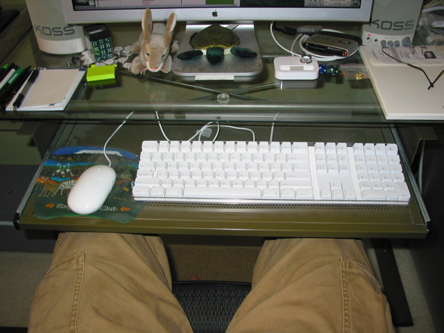

I mouse with my left hand. People keep telling me this is strange, which I don’t quite get. Even though I’m right handed, it still makes far more sense to use my left hand to control the mouse. There are really two reasons for this.
First, mostly because of the more-or-less standard layout for keyboards. They put all these extra keys over on the right hand side. So if you put the mouse over on the right, you have to swing your right hand back and forth quite a ways to switch between typing and mousing. That just makes it more complex and time consuming to do things.
Second, if you want the part of the keyboard you use most to be centered on you and you like using keyboard trays, then there is no extra room on the right anyways. So you’re stuck either putting the mouse up on the desk somewhere, or doing some other compromise to keep the mouse on the right. Which seems weird since there is extra room over on the left.
So I mouse with my left hand.
Maybe a picture would help explain:  (do you know how hard it is to take a picture of basically your lap?)